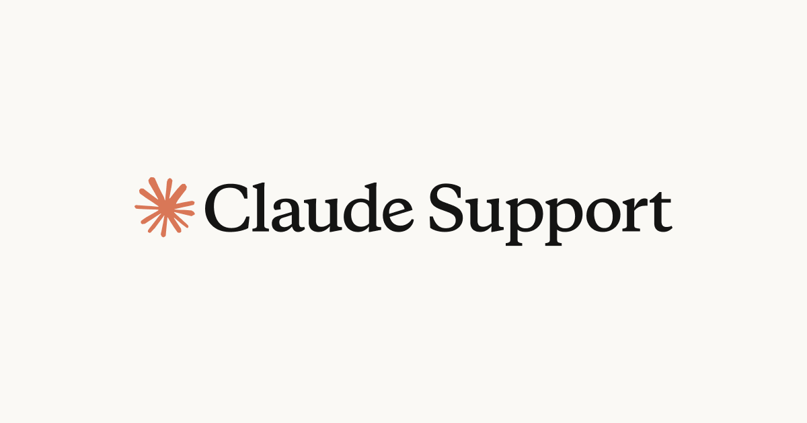
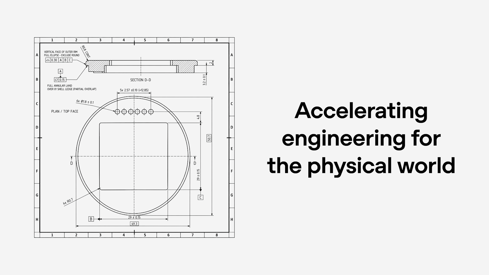

AI Intelligence Daily · 2026-11-04（周三）
统计窗口：2026-11-03 08:00 → 2026-11-04 08:00（上海）· 事实与判断分区 · 国内/国际双轨 · 吸收快讯 11-03 11:19 ZCode 3.17.2（185）+ handoff agent-desktop 1.1.0 / Cowork EDR 慎写 / Marvis×UOS 缺官网 · 11-03 13:13～23:24 多轮 SILENT · **一线 Desktop/Work Agent 新上线 = 1（智谱 ZCode 3.17.2）** · npm：codex **0.166.0** / claude-code **2.1.318**↑ / gemini-cli **0.66.0** / codebuddy **2.179.3** / kimi-code **2.4.1** / minimax-code **0.7.4** / dsh **0.2.1-rc.5**（alpha 0.2.2-alpha.3） · Desktop：ZCode **3.17.2** · MiniMax CDN 仍 **3.1.10** · Kimi Desktop 仍 **1.2.1** · FlashProve ★**357** · dsh-superagent-prototype ★**16,697**（tip 仍 8c32a9d@10-31；pushed_at 漂移=force_push）· DeepInfer ★**25,220** · agent-desktop ★**12,690** · Hyra-results ★**200** · opencode ★**224,355** · servers ★**91,772**
今日一句话判断
Anthropic 同日加压「信任层」两端：FlashProve 用 zkSNARK 做可证明推理（研究页 Nov 2 + 官方 X Nov 3 宣发，Daily 11-03 漏收），Claude EMA 把企业 MCP/插件鉴权收成组织级 auto-connect；HN 上 Postman 静默给 Codex/Claude/Cursor 装插件并自批 hook 的争议爆发，把 Agent 插件同意边界推到台前——国内侧智谱 ZCode Desktop 3.17.2 正式发船（Computer Use 多会话 / MCP 无 Node）由快讯吸收。 desktop_shipping=1。对你两条主线：模型服务身份可核验 + 组织级 MCP 委托与 本机 Agent 插件/hook 的同意与信任记录同时变成硬问题；Desktop 发船继续验证 plan-mode 闸门与多会话 CU。
专栏一｜新闻
本栏结构：
- 国际头条：Anthropic FlashProve / Provable Inference（zkSNARK；漏收补记）
- 国际头条：Postman Desktop 静默安装 AI Agent 插件 + 官方回应（HN 热议）
- 国际头条：Claude Enterprise-Managed Auth（EMA）插件 auto-connect / MCP 扩展
- 国内头条：智谱 ZCode Desktop 3.17.2（快讯 185 吸收；desktop_shipping=1）
- 国际中栏：OpenAI「加速物理世界工程」Astra/Codex CAD 工作流
- 国际短讯：vercel-labs agent-desktop 1.1.0（handoff；非一线厂 Desktop 产品）
- 国内 continuum：Hyra-results 合入 HyCell；Kimi K3.1 Pro 权重承诺「by Nov 4」截稿未兑现
- 不升格：MiniMax 3.1.10 / CodeBuddy 2.179.3 / Kimi Desktop 1.2.1 / Northflank 仍 MONITORING（无新 RCA）/ Marvis×UOS 缺官网 / HY4 仅预热视频 / DeepSeek Super-agent 无新提交
排序依据：重要度 → 用户相关性 → 时效。
1. Anthropic FlashProve：zkSNARK 可证明推理原型开源（漏收补记）
S/强A · NEW（漏收） · 国际 · G/F/A/H · Provable Inference / Trust · watchlist **186** · 研究页 Published **Nov 2, 2026** · @AnthropicAI **2026-11-03 20:10:08Z** · GHanthropics/FlashProve★**357** Apache-2.0 · **非 Desktop shipping**
发生了什么（事实）
- anthropic.com/research/provable-inference 标 Published Nov 2, 2026（Frontier Red Team 等）：发布 FlashProve——面向大模型推理的 zkSNARK 原型，使验证方可在不知权重的情况下核验「响应确由所承诺模型生成」。
- 性能叙述（官方文）：Llama 4 Maverick（400B MoE、4-bit）单卡 H100 约 110 tok/s 生成证明；约 19 MB/1,024-token 请求；相对 vLLM 推理约 70–95× GPU 时间；承诺隐藏权重、不隐藏架构；上下文上限叙述约 1,024 tokens；post-hoc 证明；附 Lean 顶层安全陈述 + C++/Lean 验证器。
- 同发：技术报告、协议说明、可执行代码与 Lean 证明（Apache 2.0）；权重不在仓内，读者自 HF 取 Meta Llama 4（第三方 4-bit）。
- @AnthropicAI 2026-11-03 20:10:08Z 官方宣发（截稿约 ★2.8k / 印象约 20 万量级，以帖 public_metrics 为准）。Daily 2026-11-03 未收（研究页日期落在其窗内、宣发在本窗）→ 本报漏收补记 + 宣发吸收。
- GH
anthropics/FlashProve：截稿 ★357；created/pushed元数据偏 10-30（以研究页+官方 X 为事件锚）。

图 1 · Provable Inference 研究页配图 · 来源：anthropic.com/research/provable-inference
我的判断
- S/强A。把「你以为连的是哪套权重」从运营承诺推进到可密码学核验的原型——对路由服务偷换模型、推理链被篡改、评测/监管抽检都有直接含义。
- 仍是 研究原型：整数/贪婪解码假设、短上下文、架构不隐藏、开销约两数量级 → 不能写成「生产推理已可证明」。
未来影响
- Agent 服务网络若要「按模型身份计费/问责」，缺的是可验证的模型绑定；FlashProve 把可行性上移到公开对照基线，后续竞争会在开销、稠密模型与在线证明上。
对智能体互联网
- 强相关。 跨 Agent 调用与第三方路由场景，可把「模型承诺 + 证明」视为 Trust 层原语雏形；与身份/委托凭证正交但可组合（先证明是哪套模型，再谈谁被授权调用）。
对 Work·Agent 引擎
- Cloud Agent / 多租户 Serving：评估是否需要「关键路径抽检证明」而非全量；本地 Desktop 短期无直接发船，但合规叙述会引用同类能力。
建议动作
- 通读研究页 Limitations + Lean 顶层陈述；对照自研 Serving 是否有「模型指纹/路由审计」。
- 拆
anthropics/FlashProve验证器路径与承诺格式（PoC 级）。 - 关注是否扩展到稠密模型 / 更长上下文 / 在线证明。
来源：provable-inference · github.com/anthropics/FlashProve · @AnthropicAI
2. Postman Desktop 静默安装 Codex/Claude（及 Cursor）插件并尝试自批 hook：社区爆炸 + 官方回应
强A · NEW · 国际 · G/E/F/B · Agent 插件同意 / Hook Trust · watchlist **188** · GH issue **#14370** 创建 10-25 · HN **2026-11-03 17:22:37Z** ≈**971** 分 · 官方回复 **2026-11-03 23:36:43Z** · **非 Desktop shipping（第三方 IDE/Agent 宿主污染面）**
发生了什么（事实）
- postmanlabs/postman-app-support#14370（作者 indicava；Created 2026-10-25）：报告 Postman Desktop（例 12.33.4）经
auto-existing-upgrade自动安装 Claude Code 与 Codex 插件，改动用户全局配置；Codex 侧写入 marketplace/plugin，并尝试对自身 SessionStart hook 写入hooks.state/trusted_hash；另装 CLI、启用远程 MCPhttps://mcp.postman.com/mcp；hook 文案引导「非平凡 API 工程任务」加载 Postman skill。 - 本窗实质进展：HN 帖 2026-11-03 17:22:37Z，截稿约 971 分、大量讨论；同日多用户复现，含 Cursor:already-installed 路径与更新后再次 auto-install（例 12.31.3→12.35.1，日志时间约 22:58Z）。
- Postman 员工 zecoquit 于 issue 2026-11-03 23:36:43Z 回应：称捆绑 CLI/插件为降低安装摩擦，下载页/更新流有提及；承认反馈，将更清晰 opt-in（尤其既有用户）并审查 hook 批准与 session-start 行为。
- 社区旁证：有评论演示 Codex hook trust 记录可在本机账户内用文本编辑器 mint（信任边界在配置文件层）——作威胁模型参考，非 Postman 官方声明。
我的判断
- 强A（治理/安全）。不是新模型，但是 Agent Harness 供应链同意模型的活体案例：宿主 App 改写其他 Agent 的全局插件、MCP 与 hook trust，等于扩大「confused deputy / 默认路由劫持」面。
- 官方回应承认体验、承诺改 opt-in，但尚未看到完整回滚文档与「新装也必须 opt-in」的硬承诺落地——继续钉。
对智能体互联网
- 插件发现/安装必须默认 显式用户同意；跨应用「帮你连好 MCP」若无独立授权 UX，会破坏 Trust 假设。
对 Work·Agent 引擎
- 强相关。 (1) 全局 marketplace/plugin 写入应隔离到项目或需二次确认；(2) hook
trusted_hash不能仅是可被同用户进程伪造的本地文件；(3) SessionStart 注入宽泛 skill 指令 = 隐性系统提示投毒面；(4) 企业 EDR/策略需覆盖「非本产品安装器改 Agent 配置」。
建议动作
- 审计本机
~/.codex/config.toml、~/.claude、Cursor 插件目录是否出现postman@；按 issue 卸载路径清理。 - 产品对照：安装器禁止自批 hook；插件默认 off；SessionStart 文案最小权限。
- 跟踪 #14370 后续补丁与下载页文案变更。
来源：issue #14370 · HN 50354960 · postman-plugin 钉版本 hooks
3. Claude Enterprise-Managed Auth（EMA）：组织级插件/MCP auto-connect（Claude 可为 trusted issuer）
强A · NEW · 国际 · E/F/C · MCP Auth 扩展 · watchlist **187** · @ClaudeDevs **2026-11-03 18:09:42Z** 起线程 · Help Center 文标 **November 3, 2026** · MCP 扩展enterprise-managed-authorization· **非 Desktop shipping**
发生了什么（事实）
- @ClaudeDevs 2026-11-03 18:09:42Z（主帖截稿约 4.2k likes / 39 万+ impressions）：用户登录 Claude 时可 auto-connect 接受 Claude 为 trusted issuer 的插件；线程说明 EMA 让管理员经 IdP 为组织统一连接插件，成员无需逐个搜索/登录/授权；若 IdP 不支持 EMA，Claude 可直接为已登录成员背书（Claude-issued，beta）。
- 列出 beta 连接器示例：Amplitude、Apollo、Atlassian、Datadog、Dropbox、Figma、Granola、HubSpot、Linear、Mixpanel、Notion、PagerDuty、Semrush、Supabase 等。
- Claude Help：Auto-connect your organization’s apps（文内 November 3, 2026 / Updated in the last hour）：Team/Enterprise；IdP-managed GA，Claude-issued beta。
- 规范面：MCP Enterprise-Managed Authorization 扩展（
io.modelcontextprotocol/enterprise-managed-authorization）——组织 IdP 集中控制 MCP 访问；与标准「每用户每服务授权」并列。

图 2 · @ClaudeDevs 帖视频缩略图 · 来源：X / ClaudeDevs

图 3 · Claude Help Center 文 OG · 来源：support.claude.com 该文
我的判断
- 强A。企业 Agent 落地的真实瓶颈常是连接器授权摩擦与权限治理；EMA 把「人→插件」改成「组织策略→插件」，并尝试把 Claude 本身做成 issuer——这是 MCP 生态从消费级 OAuth 走向 B2B 身份联邦 的明确一步。
- 与 Postman 事件对照：一边是用户未同意的自动安装，一边是管理员同意的自动连接——同意主体不同，产品叙事都叫 auto-connect，选型时必须拆开。
对智能体互联网
- 强相关。 发现与授权应支持「组织策略下发 + 可审计 issuer」；Claude-issued 路径降低对完整 IdP 的依赖，但也把信任集中到 Claude 租户身份。
对 Work·Agent 引擎
- 多租户 MCP：评估是否实现 EMA 扩展或等价「管理员预授权 + 成员继承」；连接器目录与角色/组绑定；撤销与离职员工作流。
建议动作
- 读 MCP EMA 扩展页 + Claude Help；对照自研 OAuth/连接器开通 UX。
- 插件开发者：评估是否声明接受 Claude issuer。
- 安全评审：Claude-issued vs IdP-managed 的威胁模型与日志。
来源：ClaudeDevs 主帖 · Help Center · MCP EMA 扩展
4. 智谱 ZCode Desktop 3.17.2 正式发船（快讯吸收）
强A · NEW（日报吸收） · 国内 · B/C/E/F · Coding Desktop · watchlist **185** · changelog **Released Nov 3, 2026** · CDN releaseDate Mac **2026-11-02T06:43:49Z** / Win **06:51:48Z** · 快讯 11-03 11:19 PUSH · **desktop_shipping=1**
发生了什么（事实）
- 中英 changelog 顶条均为 3.17.2 · Released Nov 3, 2026；CDN
…/zcode/electron/releases/3.17.2/{macos-arm64|windows-x64}/latest.yml可核验；更高版本探针 404。 - 引擎相关要点：Computer Use multi-session cursors；未装 Node 亦可启 MCP + 配置草稿 UI + 权限检测收紧到已注册工作区；ZCode Sites 插件；模型项扩 Kimi K3.1 Pro / MiniMax M3.1 Flash；修复 plan-mode 高风险操作可被放行 等。
- 相对 Daily 11-03 / 09:18 基线 3.16.3（Oct 23） 为漏收；快讯已推，本报全文吸收，不复推快讯口径。官方 X 本窗仍未见发船原帖。changelog 无本版专图 → 本条不配图。
我的判断
- 国内一线 Work/Coding Desktop 小版本发船；CU 多会话与 MCP 降依赖直接对照本地 Runtime；plan-mode 闸门修复说明「计划≠低权限」仍是高频漏洞类。
对智能体互联网：间接——MCP 安装面扩大 ≠ 可信身份。
对 Work·Agent 引擎：强相关——多会话 CU 状态隔离、内嵌 runtime 供应链、plan-mode 权限回归测试、多模型路由壳的授权边界。
建议动作：实机冒烟 CU/MCP/plan-mode；对照 watchlist 76 历史 MCP CVE 面；盯自动更新。
来源：en/changelog · cn/changelog · CDN latest.yml · flashes/2026-11-03-1119.md
5. OpenAI：加速物理世界工程——Astra/Codex 做 CAD·PCB·仿真协作
A−/B+ · NEW · 国际 · B/C/K/J · Computer Use / 工程 Agent · openai.com · RSS **Tue, 03 Nov 2026 12:00:00 GMT** · **desktop_shipping=0**
发生了什么（事实）
- openai.com/index/accelerating-engineering-for-the-physical-world（November 3, 2026）：叙述用 Astra（含 multimodal / computer use）与 Codex/ChatGPT 辅助机电设计——外壳、PCB、固件/软件集成；内部硬件团队 token 用量自称自 2 月起约 23×；BenchCAD 2.0 等内部评测数字；合作方含 Chip Ganassi Racing、Mazda 等；公开招募工程协作。
- 文称两名成员用 Astra 约一周侧项目设计「对讲 Codex」设备原型，合同制造商约一个月小批量——并坦言制造公差/装配细节仍需多轮人工。
- 不是新 Desktop 客户端发船；属能力叙事 + 行业合作。

图 4 · 文章 OG · 来源：openai.com 该文
我的判断
- A−/B+。把 Coding Agent 叙事从「改软件」扩到「改物理制品工具链」；对 Computer Use + 专业 CAD/ECAD 宿主集成是路线信号，但缺可复现公开基准任务包。
对智能体互联网：弱——更多是工具链深度而非跨 Agent 协议。
对 Work·Agent 引擎：中等相关——专业软件内的 CU/插件权限、仿真与出图工作流编排、人审闸门。
建议动作：关注是否开源 BenchCAD 任务；内部若有 CAD 场景可对标协作表单。
来源：accelerating-engineering-for-the-physical-world · OpenAI RSS 12:00 GMT
6. vercel-labs agent-desktop 1.1.0：Computer Use CLI/库小版本（handoff）
B · NEW · 国际 · C/B/H · Computer Use 基础设施 · watchlist 可附注 · npm/GH **2026-11-03 ≈04:13–04:15Z** · ★**12,690** · **desktop_shipping=0**（非一线厂 Work Desktop 产品）
发生了什么（事实）
- GH release v1.1.0 published_at 2026-11-03T04:13:45Z；npm
agent-desktop1.1.0 @ ≈04:15Z。 - 相对 1.0.2：含 Windows/macOS overlay/caret 等大量修复与
type --interval-ms等；handoff 另记 C ABI / envelope BREAKING、Dock/menu-bar 等（以 release/CHANGELOG 为准）。 - 快讯多轮 SILENT 交 Daily；不计 desktop_shipping。
判断 / 启示：开源 CU 控制面持续打磨；可作 Harness 对照，勿与 ZCode/Claude Desktop 发船混列。
来源：v1.1.0
7. 短讯与脚注
- Hyra-results HyCell（181 continuum · UPDATE）：
Tencent-Hunyuan/Hyra-results2026-11-03T16:56:45Z 合入 HyCell（16.1M 单细胞 embedding；News 文案日期 11-02）★200——AI4Science artifacts，非 Desktop。 - Kimi K3.1 Pro 权重「by Nov 4, 2026」（129）：截稿 ≈08:15 CST 官方 HF
moonshotai未见新仓兑现；Desktop 仍 1.2.1@10-30；继续钉，勿写已开源。 - Claude Code npm 2.1.318：相对 Daily 11-03 的 2.1.316 / 快讯曾见 2.1.317 → 版本钉上移；changelog 含 mods 同意记录、MCP/云会话大量修复——作基线，不单开头条。
- 不升格：Northflank Security incident 仍 MONITORING（无新 RCA）；Marvis×UOS 媒体有、官网无；@TencentHunyuan「4 Real Productivity」为 HY4 预热视频非 GA；SenseNova 6.8 Flash 官宣日期偏 11-02（漏收补记级，非本窗 Desktop）。
专栏二｜话题热议
T1. Postman「静默装 Agent 插件」冲上 HN 首页
强信号 · 国际 · G/E · 与新闻条 2 同源
- HN ≈971 分（2026-11-03 17:22Z 起）；讨论聚焦 consent、hook 自批、企业环境风险、卸载路径；Bruno/自建客户端迁移声浪高。
- 判断：情绪噪音与真问题并存——真问题是 Agent 宿主配置的跨应用可写性；官方回应后仍需看补丁是否「默认 off」。
T2. FlashProve 官方 X 宣发扩散
中高信号 · 国际 · G/F
- @AnthropicAI 主帖高互动；多语种解读帖跟进（「防止偷换便宜模型」叙事占主导）。
- 判断：公众理解落在「防偷换」比「监管 pacing」更强；工程读者应回到证明开销与假设边界。
T3. 国内：Personal Agent /「生产力系统 vs 模型」舆论
中信号 · 国内 · K/C · 媒体
- 量子位 11-03：《纯语音 Personal Agent…》（产品名 Orilo 体验稿）与《模型谁都买得到，拉开差距的是 AI 生产力系统》（海马云/RunningHub 商业叙述，点名 Harness）。
- 判断：作风向，非官方发船；Orilo 缺本报独立产品页硬核核验则不升新闻栏。V2EX 等 Claude 账号 KYC/额度焦虑——舆论抽样，无 shipping。
专栏三｜开源雷达
| 项目 | 变化（可核验） | 看点 | 建议 |
|---|---|---|---|
| anthropics/FlashProve | ★357；研究页 Nov 2 + X Nov 3 | zkSNARK PI 原型 + Lean | 拆验证器 / 关注后续 |
| deepseek-ai/dsh-superagent-prototype | ★16,697（vs Daily 11-03 ≈13,082）；无新 commit（force_push 噪声） | 热度≠产品化 | 继续钉 180；勿写 GA |
| vercel-labs/agent-desktop | v1.1.0；★12,690 | CU CLI/库 | 对照 overlay/权限 |
| Tencent-Hunyuan/Hyra-results | ★200；合入 HyCell | AutoResearch artifacts | 181 continuum |
| DeepInfer / opencode / servers | ★25,220 / 224,355 / 91,772 | 短窗缓涨 | 常规观察 |
MiniMax mcode-agent-table（created 11-03，BYOB Table Protocol v0.1，★个位数）：协议草图级，开源雷达脚注即可。
重点事件新进展
Northflank Security incident（178）
- 此前：Monitoring @ 2026-11-02 11:09Z + CVE-2026-98432；促轮换；拟 RCA。
- 今日新增：status 仍 MONITORING，resolved=null；无完整 RCA / RESOLVED。
- 判断是否变化：否（无实质新进展）——维持钉，不重复展开。
腾讯混元 Hyra 2.0 / Hyra-results（181）
- 此前：Daily 11-03 收 Hyra 2.0 架构与结果仓。
- 今日新增：合入 HyCell（11-03 16:56Z）；★200。
- 判断是否变化：是（artifacts continuum）——科研权重扩展，非产品 Desktop。
Message Threads（182）/ Pando（183）/ LifeVal（184）
- 本窗未见官方实质增量 → 不重复报道。
ZCode（185）
- 快讯已 PUSH；更高版本 404 → 本报吸收为新闻条 4；基线改为 3.17.2。
今天正在形成的趋势
- 信任从「品牌承诺」转向「可核验绑定」：FlashProve（模型推理）与 EMA（组织连接器）同日出现，说明 Serving 身份与企业授权都在产品化。
- Agent 插件默认安装成为治理地雷：Postman 事件证明「为了省事而写全局 Agent 配置」会在开发者社区引爆；opt-in 与 hook trust 存储位置变成标配议题。
- Desktop/CU 继续双轨：一线厂 Desktop 小版本（ZCode）叠开源 CU 库（agent-desktop）——产品壳与控制面库分工更清晰。
- 国内科研 Agent artifacts 持续开源、消费级权重承诺仍可能跳票：HyCell 合入 vs Kimi K3.1 Pro 截稿未兑现。
- 「Harness / 生产力系统」话语在中文媒体升温：需与可核验发船区分，避免被软文带节奏。
对智能体互联网最值得吸收的东西
- 模型身份证明接口雏形（FlashProve）：跨路由/第三方 Serving 场景预留「承诺 + 证明」槽位，即使先做抽检。
- 组织级 MCP 授权（EMA）：发现/连接协议要支持管理员策略下发与 issuer 联邦，而不仅是终端用户 OAuth。
- 跨应用安装的同意边界：任何「帮用户接通 Agent」的安装器必须独立 opt-in，且不得自批对方 hook trust。
对 Work / Agent 引擎最值得吸收的东西
- plan-mode / SessionStart / hook 的权限模型：ZCode 修复与 Postman 注入是正反教材——计划态与启动钩子都是高危面。
- MCP 无 Node / 内嵌 runtime：降低宿主依赖时同步做供应链与工作区权限收紧。
- Computer Use 多会话：光标/焦点/租约（lease）模型对照 agent-desktop 与 ZCode 两侧实现。
值得继续跟踪
- 事件：FlashProve（186） — 观察：稠密模型/更长上下文/生产抽检叙事；第三方复现。
- 事件：Claude EMA（187） — 观察：扩展实现矩阵；Claude-issued 安全评审；他厂是否跟进。
- 事件：Postman #14370（188） — 观察：opt-in 补丁；下载页文案；是否波及更多 Agent 宿主。
- 事件：ZCode 3.17.2（185） — 观察：实机 CU/MCP；下一小版本；官方 X 补帖。
- 事件：Kimi K3.1 Pro 权重（129） — 观察：HF/ModelScope/官网是否于 11-04 当日兑现。
- 事件：Northflank（178） — 观察：RCA / RESOLVED / CVE 细节。
- 事件：Hyra HyCell（181） — 观察：更多 AI4Science 权重；是否独立 harness 仓。
- 事件：agent-desktop 1.1.x — 观察：BREAKING 后适配成本；与自研 CU 对照。
未来信号
- 可证明推理进入「可公开对照」阶段：若开销继续下降，Agent 服务网络的计费与问责可能要求「关键工具调用附模型证明」。
- Personal Agent 语音优先形态（Orilo 等媒体叙事）仍缺硬核协议/开源；保持 K 栏雷达，不升格。
- Kimi 权重承诺日：若兑现，可能瞬时改变国内开源 Coding 基座格局——快讯优先。
价格 / 订阅雷达
今日未见可核实的重要新促销、调价或额度变化。（OpenAI/Claude 本窗稿件非价目变更；Postman 事件非定价。）
信源与方法（vendor-check 摘要）
- 国际 P0/P1：Anthropic 研究页 + @AnthropicAI/@ClaudeDevs；OpenAI RSS/工程文；MCP 扩展站；Postman issue + HN；GH releases（FlashProve/agent-desktop）；npm（claude-code/codex/gemini-cli）；Northflank status（仍 MONITORING）。
- 国内 P0/P1：ZCode changelog+CDN；MiniMax CDN 3.1.10；CodeBuddy 2.179.3；Kimi Desktop 1.2.1；DeepSeek prototype commits；Hyra-results；@TencentHunyuan 预热视频；机器之心/量子位/IT之家公开页；Marvis 官网未列 UOS。
- 社区：HN Postman；X 官方帖；V2EX 舆论不升格。
- 扫描日志：
/workspace/daily-2026-11-04/cn-scan.md（国内完整）；国际主编核验 + 待intl-scan.md归档。